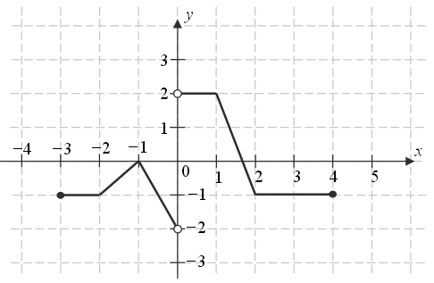

Jesteś tutaj: Szkoła → Funkcje → Funkcje - definicje
i własności → Wartości funkcji i
odczytywanie ich z wykresu
Wartości funkcji i odczytywanie ich z wykresu
Wartości funkcji - to wszystkie \(y\)-ki jakie przyjmuje wykres
funkcji.
Zbiór argumentów to zbiór x-ów.
Zbiór wartości to zbiór y-ów.
Zbiór wartości to zbiór y-ów.
Jeśli mamy podany wzór funkcji, to możemy obliczyć wartość, jaką przyjmuje
funkcja dla dowolnego argumentu \(x\).
Wystarczy, że podstawimy we wzorze funkcji pod \(x\)-a podaną liczbę, a w rezultacie otrzymamy dla niej szukaną wartość \(y\).
Wystarczy, że podstawimy we wzorze funkcji pod \(x\)-a podaną liczbę, a w rezultacie otrzymamy dla niej szukaną wartość \(y\).
Oblicz jaką wartość przyjmuje funkcja \( y = 2x + 3 \) dla \( x = 5 \).
Do wzoru funkcji: \[y = 2\color{Red}x\color{black} + 3\] podstawiamy pod \(x\)-a
liczbę \( 5 \): \[y = 2\cdot \color{Red}5\color{black} + 3\] i otrzymujemy: \[y = 2\cdot 5 + 3 =
10 + 3 = 13\] Zatem dla argumentu \(x = 5\) funkcja przyjmuje wartość \(y = 13\).
Oblicz jaką wartość przyjmuje funkcja \( y = x^2 - 5x + 1 \) dla \(x = -3\)
Do wzoru funkcji: \[ y = x^2 - 5{x} + 1 \] podstawiamy pod \(x\)-a liczbę \(-3\):
\[ y = (-3)^2 - 5\cdot (-3) + 1 \] otrzymując, że: \[ y = 9 + 15 + 1 = 25 \] Zatem dla argumentu
\(x = -3\) funkcja przyjmuje wartość \(y = 25\).
Wartości funkcji obliczamy często przed narysowaniem wykresu funkcji.
Poniższe nagranie wideo dotyczy przede wszystkim dziedziny funkcji, ale znajdziesz tam również informacje o
wartościach funkcji.
W tym nagraniu wideo omawiam pojęcie dziedziny funkcji.
Do odczytywania wartości funkcji z wykresu niezbędna jest umiejętność zaznaczania i odczytywania współrzędnych punktów w układzie
współrzędnych.
Jak dokładnie odczytywać wartości funkcji z wykresu dowiesz się z poniższego
materiału wideo.
W tym nagraniu wideo pokazuję jak odczytywać wartości funkcji z wykresu.
Dany jest wykres funkcji: Odczytaj wartości jakie przyjmuje ta funkcja dla argumentów \(x=-6\), \(x=-4\),
\(x=2{,}5\) oraz \(x=6\).
Zaznaczamy na wykresie punkty dla podanych argumentów \(x\). Odczytujemy z wykresu, że:
dla argumentu \(x=-6\) funkcja przyjmuje wartość \(y=4\),
dla argumentu \(x=-4\) funkcja przyjmuje wartość \(y=0\),
dla argumentu \(x=2{,}5\) funkcja przyjmuje wartość \(y=2\),
dla argumentu \(x=6\) funkcja przyjmuje wartość \(y=-1\).
dla argumentu \(x=-4\) funkcja przyjmuje wartość \(y=0\),
dla argumentu \(x=2{,}5\) funkcja przyjmuje wartość \(y=2\),
dla argumentu \(x=6\) funkcja przyjmuje wartość \(y=-1\).
Dany jest wykres funkcji: Odczytaj z wykresu dla jakich argumentów \(x\) funkcja przyjmuje wartość:
\(y=6\)
\(y=2\)
\(y=0\)
\(y=-3\)
\(y=-5\)
Z wykresu:
odczytujemy, że:
wartość \(y=6\) funkcja przyjmuje dla \(x = -7\),
wartość \(y=2\) funkcja przyjmuje dla \(x = -5\) oraz dla \(x \in \langle -2,
4\rangle \),
wartość \(y=0\) funkcja przyjmuje dla \(x = -4\), \(x = -2{,}5\) oraz dla \(x
= 5\),
wartość \(y=-3\) funkcja przyjmuje dla \(x = 8\),
wartości \(y=-5\) funkcja nie przyjmuje dla żadnego \(x\)-a.
Na rysunku przedstawiony jest wykres funkcji \(f(x)\) określonej dla \(x\in [-7,
8]\).  Odczytaj z wykresu i
zapisz:
Odczytaj z wykresu i
zapisz:
a) największą wartość funkcji \(f\),
b) zbiór rozwiązań nierówności \(f(x)\lt 0\).
Odczytaj z wykresu i
zapisz:a) największą wartość funkcji \(f\),
b) zbiór rozwiązań nierówności \(f(x)\lt 0\).
a) \(7\); b) \(x\in (-3;5)\)
Zbiorem wartości funkcji przedstawionej na rysunku jest przedział 
A.\(\langle -3,6 \rangle\)
B.\(\langle -1,4 \rangle\)
C.\((1,3)\)
D.\((-2,2)\)
B
Zbiorem wartości funkcji, której wykres przedstawiono na rysunku jest
przedział:
A.\( \langle -4,5 \rangle \)
B.\( \langle -3,4 \rangle \)
C.\( \langle -2,4 \rangle \)
D.\( \langle -3,2 \rangle \)
B
Na rysunku przedstawiony jest wykres funkcji \(y = f(x)\).  Zbiorem wartości tej funkcji jest
Zbiorem wartości tej funkcji jest
Zbiorem wartości tej funkcji jest
A.\( \langle -4,3 \rangle \)
B.\( \langle -4,-1 \rangle \cup \langle 1,3 \rangle\)
C.\( \langle -4,-1 \rangle \cup ( 1,3 \rangle \)
D.\( \langle -5,6 \rangle \)
C
Na rysunku przedstawiono wykres funkcji \(f\). Odczytaj z wykresu i zapisz:
- zbiór wartości funkcji \(f\),
- przedział maksymalnej długości, w którym \(f\) jest malejąca.
a) \(\langle -2;3 \rangle \)
b) \(\langle -2;2 \rangle \)
Na rysunku przedstawiono wykres funkcji \(y=f(x)\).  Największa wartość funkcji \(f\) w
przedziale \([-1,1]\) jest równa
Największa wartość funkcji \(f\) w
przedziale \([-1,1]\) jest równa
Największa wartość funkcji \(f\) w
przedziale \([-1,1]\) jest równa A.\( 4 \)
B.\( 3 \)
C.\( 2 \)
D.\( 1 \)
B
Rysunek przedstawia wykres pewnej funkcji \( y=f(x) \), określonej dla \( x \in
\langle -4,4 \rangle \). Zbiór
wszystkich argumentów, dla których funkcja \( f \) przyjmuje wartości niedodatnie, to zbiór
A.\(\langle 0,3 )\cup ( 3,4 \rangle \)
B.\(\langle -4,-3 \rangle\cup \langle 0,4 \rangle \)
C.\((-4,-3)\cup (0,3)\cup (3,4) \)
D.\((-2,1)\cup (3,4) \)
B
Do wykresu funkcji \( f(x)=\frac{a}{x+1} \) określonej dla \(x\ne -1\) należy punkt
\( A=(-2,3) \) dla \( a \) równego:
A.\(-3 \)
B.\(3 \)
C.\(-8 \)
D.\(8 \)
A
Zbiorem wartości funkcji \(f\) jest przedział
A.\( \langle -3,5 \rangle \)
B.\( \langle -6,7 \rangle \)
C.\( \langle 0,6 \rangle \)
D.\( \langle -5,8 \rangle \)
A
Przedziałem, w którym funkcja \(f\) przyjmuje tylko wartości ujemne, jest
A.\( \langle 5,0 \rangle \)
B.\( ( 5,7 \rangle \)
C.\( \langle 0,7 \rangle \)
D.\( \langle -6,5 \rangle \)
B
Na rysunku przedstawiono wykres funkcji \(f\).  Zbiorem wartości funkcji \(f\) jest
A.\( (-2,2\rangle \)
B.\( \langle -2,2\rangle \)
C.\( \langle -2,2) \)
D.\( (-2,2) \)
A